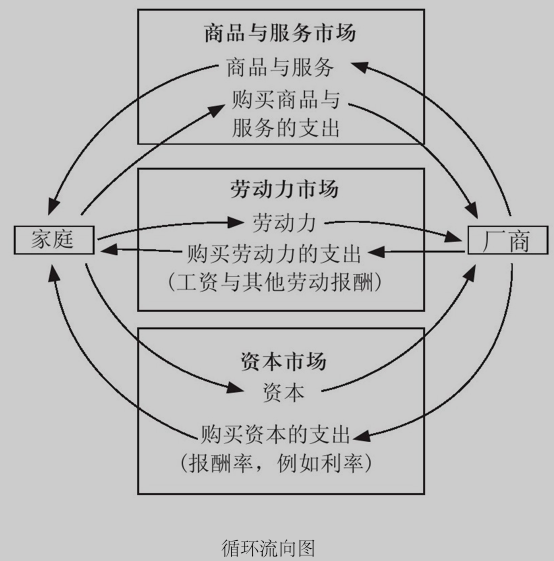
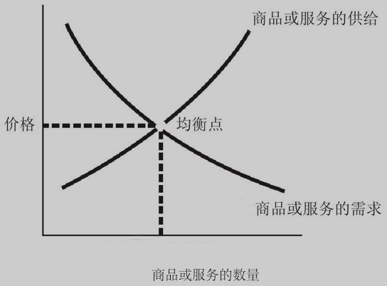

book-the-instant-economist
Table of Contents
- 斯坦福极简经济学：如何果断地权衡利益得失
- 序言
- 微观经济学篇
- 01 人们卖弄的经济学原理只有50%是正确的
- 02 做自己最适合做的事，就有更好的生产力
- 03 市场均衡点并不表示人们对结果感到满意
- 04 在任何情况下都必须有所取舍
- 05 增加的生产成本可以转嫁给消费者吗？
- 06 你的薪水最终由你的产出决定
- 07 折现值是个很重要的概念
- 08 人一生积累财富的关键是什么？
- 09 垄断的本质是对勤劳者课税
- 10 是大池塘里的小鱼，还是小池塘里的大鱼
- 11 最佳的管制方法或许就是解除管制
- 12 主张绝对的零污染是不可行的
- 13 自由市场并不保证会给发明者奖励
- 14 缴税是用强迫的方式克服搭便车问题
- 15 社会福利计划是在援助与激励之间拔河
- 16 什么样的收入不均程度算合理？
- 17 品牌可以让消费者对质量比较放心
- 18 谁能监督代理人
- 微观经济学原理总结
- 宏观经济学篇
- 19 人均GDP是一个有用的比较工具
- 20 为什么人们重视经济增长？
- 21 经济衰退，薪资很少能够大幅下降
- 22 通胀率走高会使市场运作不顺畅
- 23 贸易顺差的真正意思是借钱给国外
- 24 短期看需求，长期看供给
- 25 菲利普曲线是一种短期现象
- 26 政府的钱是怎么花的？
- 27 权衡性财政政策，知易行难
- 28 美国累计负债的长期前景很糟糕
- 29 金钱对我们没有任何用处，除非把它花掉
- 30 中央银行既有权力，也有责任
- 31 你可以牵马到河边，但不能强迫它喝水
- 32 不用扩大贸易就很富裕的国家根本找不到
- 33 全球化的整体方向将提高全世界的生活水平
- 34 汇率剧烈波动会对经济造成很大干扰
- 35 美元大幅贬值对美国并没有显著的负面影响
- 36 未来的经济不再是零和游戏
- 宏观经济学原理总结
斯坦福极简经济学：如何果断地权衡利益得失
- The Instant Economist: Everything You Need to Know About How the Economy Works
- by Timothy Taylor
- 斯坦福大学最受欢迎的经济学教授
- 36 个经纪法则关键词
序言
- 经济学不是一套答案，而是寻找答案的架构。
- 经济学研究分为两大类：
- 微观经济学：从个人、企业的观点展开研究 – 看树木
- 宏观经济学：探讨经济的整体观点 – 看森林
微观经济学篇
01 人们卖弄的经济学原理只有50%是正确的
- 对公共政策做出建议的经济学，大多只用到大学入门课的程度 by 美国政府经济学家 Herbert Stein
- 研究经济学的目的就是『为了避免被经济学家欺骗』 by 英国女经济学家 Joan Robinson
- 经济学的三个基础问题：
- 社会应该生产什么？
- 应该如何生产？
- 谁来消费所生产的东西？
- -> 两个极端：真实世界里只有极少数社会处于这两个极端。
- 一端是个人决定这三个问题的答案。
- 一端是政府完全管制，
- -> 沿着这个光谱移动：
- 守夜人国家（night watchman state），政府只提供市场经济的基础：追溯盗窃、履行合约、提供最低限度的公共基础建设（例如国防）
- 稍微放宽政府的职责范围，纳入道路和教育等公共服务
- 接下来是所谓的社会保障网：国家养老金制度（例如社会救济）与医疗保险制度
- 治理范围更广的政府：支持某些产业（例如钢铁、农业），甚至拥有部分股权。政府可能会控制食物或基本消费品（例如住宅）的分配。
- 一端是政府完全管制：政府分配全部工作、全部住房以及全部食物，政府决定每个人该做什么以及每样东西的价格
经济学不是水晶球
- 必须务实，跳出市场与政府之间的意识形态之争
- 深入了解市场实际运作机制，在市场运作不佳时改弦更张
- 经济学无法预测每项因素
- 经济学与政治立场无关，而是一个思考问题的架构
- 经济学家识做理所当然，而非经济学人士没想过的事：
- 应该严肃看待『权衡取舍』（trade-offs），例如企业课税的话题应该聚焦于实际上哪些人足够要来支付这笔税款。– 很多 trade-off 都有一个特色，它能帮助某些人，却同时伤害了其他人 [ME: 抵制日货，抵制韩国！]。而经济学家关心的是统计受到伤害或帮助的所有人，而不只是新闻报道里的几张面孔。
- 自利（self-interest）是组成社会的有效方式。例如对于问题『假如这个社会上每个人的行为都十分自私，会发生什么事？』非专业大多回答『会造成混乱』。但很多日常市场交易都依赖自利（例如货比三家等）。『借由追求自身的利益，他频繁地促进了社会利益，比他认真设想促进社会利益还有效』by 经济学鼻祖 Adam Smith
看清那只看不见的手
- invisible hand：你在追求自己利益的同时，可能也会给别人带来好处。例如，借由生产一个更好的产品，你同事改善了使用者的生活。Adam Smith 认为 invisible hand 并非灵丹妙药，但自利是一股强大的力量，当它被适当引导时，就可能为社会带来各种好处。
- -> 例如要使人们节约能源。非经济人士可能会举办公关或宣传活动，但经济学家会建议课税和补贴：如果有某个东西你想要少一点，就用税租抑制；想要多一点，就用补贴鼓励。-> 采用诱导法，而非 忽视问题。
- 所有成本都是机会成本（oppotunity cost）：当你做一个选择时，没有选择的东西就是机会成本。-> 真正的成本不是你 已经 花的钱 ，而是你 放弃的东西 。例如雇人打扫屋子一年要花3600美元，或这些钱相当于在海边度假一周。-> 用机会成本来思考，将包含没有用钱来衡量的成本 [ME: 不要只基于钱来考虑问题]。例如，上大学的成本之一，就是放弃了可以用来做其他事的时间（包括工作赚钱）
- 价格是由市场决定的，而非生产者。例如，油价上升时，大家会说『石油公司调高了燃料价格』，但油价下跌时，大家不会说『石油公司真慷慨』。对于经济学家来说，这些褒贬都是基于错误的假设。 – 房东、石油公司、银行都是贪婪的，但他们提高房租、油价和利率，不是因为想这么做（他们 一直这么做 ），而是因为市场供需关系改变了，才促使他们做这样的决定。
- 取舍不可避免。问题在于如何协调决定 生产什么、如何生产、为谁生产
02 做自己最适合做的事，就有更好的生产力
- 分工和协调，例如一支铅笔的生产过程
- 分工为生产商品的厂商与国家创造了显著的经济利益：HOW?
- 分工使工人能够聚焦于他们最适合做的事，又使企业能够充分利用当地资源 -> 从不同地区取得合适的工人和合适的资源，就有更好的生产力
- 随着不断练习，技术工人通常会变得更有生产力 -> 想出新方法，经验和专业 -> 聚焦于一个或数个所谓『核心能力』的企业，会比试图做所有事的企业做得更好 [ME: !!!]
- 分工使企业得以利用规模经济（economics of scale：大厂相对于小厂可以用较低的平均成本来生产）-> 一个地区大量生产一种东西，然后与生产别种东西的其他地区进行贸易。分工也在一个社会甚至国与国之间发生。例如，美国的汽车制造业大部分群聚在从密歇根州到阿拉巴马州这条北到南的纵贯线上。
- 高收入社会通常比低收入社会有较大规模的分工。因为专业化与贸易提供了获取产品与服务的渠道。你可以购买商品，然后借由你自己高度专业的工作来支付消费。市场经济就是协调这种精密分工的社会机制。– 『也许一个国家越富有，人们在独立无助时的生存能力就越差』by 经济学家 Robert Heilbroner
- 分功能增加企业、国家以及全球经济的产量。国家页可以发展专业化的技能与专长。最近全球贸易的一个重要趋势：价值链分解（breaking up the value chain），就是更广泛地生产零件 [ME: 全球采购]。就整体而言，每个国家专精于特定产品乃至于特定服务，这样的分工对所有参与者都更有利。
仓库管理经济学
- 比喻：整个社会生产的所有商品，可以收纳在一个仓库里：生产出某个东西，前门入库；买某个东西，后门取货。-> 现象：进入仓库的东西跟离开仓库的东西必须是一样的。生产或储存一个没人要用或者没有特别功能的商品没有意义。还要避免很多人在仓库后门等待某个买不到的商品。
- 如何调节进出仓库的东西？不能只靠人们的自我管理和自我约束。社会需要一个制度，制定出人们送进仓库以及从中取出商品的价值，以及可以连接双方的某种方式
- -> 由供需关系决定价值。市场经济里商品的价值就是它的价格。
- 这种方式为人们提供了一种动机，是他们需谨慎选择从仓库里取出的东西，且不能取出超出需要的数量。
- 市场经济里的劳动价值，则表现在工资和薪水上，这又提供了动机，使人们愿意提供对别人有价值的商品或服务。
- 价格机制与供需的力量（下一章的重点）是市场经济如何协调人们的分工，并且是进出大仓库的商品互相配合的方法
- 分散化的市场经济，通过分工而运作得如此美妙，提供广泛、实用的产品与服务
03 市场均衡点并不表示人们对结果感到满意
- 供给与需求：知道每样东西的价格，但不知道其价值，这就是经济学家
- 经济学家眼中的世界：
- 分工导致商品与服务的交换
- 社会必须以某种方式协调所有的生产与消费 – 全球高收入国家主要是通过市场安排来调节经济，并或多或少收到政府的影响。
- 从循环流向图开始：两个群体（家庭和厂商），根据经过三个市场（商品、劳动力、资本）的商品、劳务、付款流程，来描述整体经济
- 商品市场中：产品从厂商流向家庭；付款从家庭流回厂商 -> 厂商供给商品，家庭需要商品
- 劳动力市场中：劳动力从家庭流向厂商；工资与员工福利从厂商流向家庭 -> 厂商需要劳工，家庭供给劳工
- 资本市场中：家庭将金钱作为投资，成为资本；资本会投资或借给厂商；家庭收到厂商支付的股利与利息。-> 厂商需要资本，家庭供给资本
循环流向图

交换价值与实用价值
- 商品市场的价格从何而来？
- 非经济人士评论价格太高或太低，实际是把现实世界与理想世界相对比 -> 只说明偏好，没说明事情的真正原因
- 对于非经济人士来说，价格是关于个人价值取向的价值承载（value-laden）<-> 经济学家试图避免价值判断
- 交换价值（value in exchange）与使用价值（value in use）by Adam Smith – 钻石与水的矛盾（diamond-water paradox）：钻石使用价值低，交换价值高；水使用价值高，交换价值低
- 经济学家谈论价格时指的是交换价值：一个商品的交换价值与其稀缺性有关 – 商品值多少钱，和多少人想要拥有它有关。
- 剧作家奥斯卡.王尔德（Oscar Wilde）定义『愤世嫉俗的人』：一个知道每样东西价格，却不知道其价值的人。-> 可用于形容经济学家：注重每样东西的价格，却不在乎其内在使用价值。价格是视世界上的供需互动，即人们愿意且能够取得的状况决定的。
- 严格定义『商品的需求』：指商品价格与需求量之间的关系 – 商品价格上涨时，需求量便有下滑倾向。
替代效应与收入效应
供需关系图

- 横州：商品数量
- 纵轴：价格
- 需求曲线：向下倾斜 – 价格越低，需求量越多
- 这个模型有意义的两个理由：
- 替代效应（substitution effect）：商品价格越来越高时，人们可能会拿其他商品 取而代之
- 收入效应（income effect）：商品价格上涨，你的收入的购买力降低 -> 同样的东西 少买一点
- 区分『需求』与『需求量』：
- 需求量：在某一特定价格下，人们想得到该商品的特定数量 – 一个点
- 需求：价格与需求量之间的关系 – 在任何可能的价格或每种价格下，人们想要该商品的数量是多少 – 一条曲线
- 问题：什么因素造成了『需求』波动？
答案不是价格 – 价格会影响『需求量』，但不会使需求关系本身发生变动。
经济学家谈到『需求』变动时，不是在说一个『点』向上或向下运动，而是指在同样的总量下，整条『需求曲线』向上或向下移动 – 也就是说 在纵轴的每种特定价格下，所对应的『需求量』变大或变小 -> 什么因素可以造成这样的变动？- 社会整体收入：如果每个人都更有钱 -> 市场上大部分商品在每种价格下的需求量都会更多
- 社会人口：如果有更多的人需要该商品 -> 在每种价格下的需求量都会变多
- 口味与潮流：某些商品畅销与否，是由社会决定的。例如，人们消费更多鸡肉和鱼肉，就会少吃牛肉。
- 替代品的价格变动：例如，如果大多数人认为鸡肉是牛肉的替代品，那么鸡肉价格上涨，鸡肉需求量下降，牛肉需求量上升。-> 替代品价格上涨，原商品需求量上升
- 供给：指商品的『供给量』与价格之间的关系
- 商品价格上涨 -> 供给量也容易上升：价格上涨 -> 厂商更愿意供给商品，新厂商决定生产并加入这个市场
- -> 供给曲线向上倾斜，需求曲线向下倾斜
美妙的均衡点
- 区分『供给』与『供给量』：供给量是一个点，供给是一条曲线
- 问题：什么因素会影响供给？
答案不是价格（同上一个问题一样）。
什么因素可以造成供给移动？- 技术：技术进步，则在同样价格下商品供给量更多。对于农业尤其重要 [ME: 大家都有能力生产并以这个价格赢利？技术普及？]
- 要素价格（input price，投入价格）：要素价格是制造商品所投入的成本。如果要素价格上涨，那么在每种特定价格下，商品供给量将会下降。[ME: 要素需求下降 -> 有能力赢利的厂商少了？-> 能力水平不同？]
- 供给与需求如何互动：
- 低价时：
- 需求：需求量可能相当高
- 供给： 没人想生产该商品
- 价格上涨：
- 供给：生产更多
- 需求：需求量下降
- 需求量 = 供给量 -> 均衡点 [ME: 价格？]
- 低价时：
- 均衡点在实务上的含义：
- 如果商品价格 > 均衡点 -> 供给量将超出需求量 -> 商品将开始滞销 -> 卖家降价清除库存，以使人们愿意购买 -> 价格朝均衡点下降 -> 供给量将等于需求量
- 如果商品价格 < 均衡点 -> 需求量将超出供给量 -> 人们开始抢购该商品 -> 供给者开始提高价格 – 价格朝均衡点上升 -> 需求量下降，供给量上升 -> 供给量将等于需求量，价格达到均衡点
- 均衡点这个位置有特定的经济意义：价格与数量是有效率的，没有造成浪费 – 一个有效率的市场没有多余的产品或未被满足的需求
- 均衡点是市场经济的倾向，但并不是说市场总是处于均衡状态 -> 问题与争论：
- 市场达到均衡状态需要多长时间？
- 市场通常有多靠近均衡点？
- 市场价格何时或是是否会冲过均衡点而需要拉回？
- 需求或供给的任何改变（整条曲线的改变），都将使均衡点发生位移。以牛肉为例：
- 消费者收入上升 -> 牛肉需求上升（在每个价格的需求量上升）-> 需求曲线向上位移 -> 新的均衡点会落在较高的价格和需求量/供给量上
- 牛爆发疫情，导致牛肉供给下降（在每个价格的供给量下降）-> 供给曲线向左位移 -> 新的均衡点会落在较高的价格和较低的需求量/供给量上
- 分析市场如何决定价格和数量的基本模式（经济学的基础）：
- 考虑需求，考虑供给
- 从均衡点出发，思考位移（上下）或供给位移（左右）时会发生什么，思考新的均衡点会出现什么样的新价格与数量
- 现实世界里，均衡点只是意味着这个需求量与供给量达到了平衡，并不表示人们对这个结果感到满意